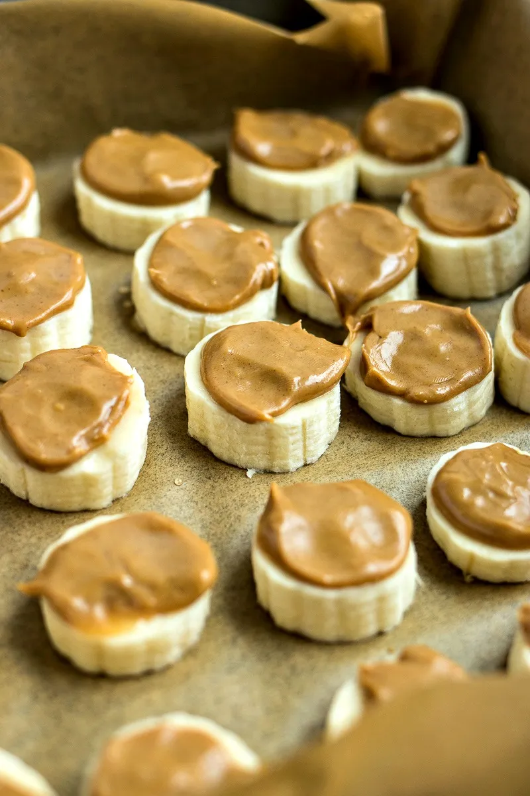

Oliveira's Family Recipes
Snacks
Frozen Banana Peanut Butter Bites

- Ingredients
- 1 Banana
- 1 cup of peanut butter
- How to make it
- Cut the bananas in thin slices.
- Place on a tray that can go in the freezer.
- pour a teaspoon of peanut butter on top of it.
- Place in the freezer for two hours and enjoy.
- Inspired by:
- Tio Adilson Oliveira
- Variations:
- Melt some dark chocolate and pour it over the banana slices with the peanut butter before putting it in the freezer.